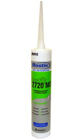

Бостик 2720 MS герметик

Однокомпонентный герметик Бостик 2720 MS не содержит растворителей, силикона и изоцианата, не имеет запаха, обладает очень маленькой усадкой, не образует пузырей при нанесении, обладает хорошей адгезией к широкому спектру материалов и хорошей устойчивостью к УФ излучению, ремонтопригоден в отличие от силикона. На Бостик 2720 MS можно наносить лакокрасочные покрытия, при этом вначале рекомендуется производить пробные нанесения.
При заделке шва равномерно выдавить герметик Бостик 2720 MS в шов, поверхность сразу же загладить влажным шпателем, гладкой доской, мастерком, расшивкой или пальцем.
Герметик Бостик 2720 MS предназначен для заделки соединительных и деформационных швов внутри и снаружи помещений, швов надземных сооружений по стандарту DIN 18540-F. Используется для герметизации фальцевой кровли, окон, дверей, крыш, в деревянных и металлических конструкциях и в конструкциях, имеющих контакт с продуктами питания. Нанесенный герметик Бостик 2720 MS вулканизируется под воздействием атмосферной влажности в мягкую и эластичную резиноподобную массу, обладающую высокой устойчивостью к воздействию атмосферы, воды и химикатов.
Преимущества герметика Бостик 2720 MS:
- однокомпонентный;
- отвердевает от влаги воздуха;
- в отличие от полиуретанов - безвреден, не содержит изоцианатов и растворителей, (GEV-EMICODE EC 1 - пониженная токсичность);
- не имеет запаха;
- допускает контакт с пищевыми продуктами;
- не пропускает влагу;
- паропроницаем;
- рабочий диапазон температур от -400С до +800С;
- обладает отличной выталкиваемостью (экструдируемостью) даже при холодной погоде;
- не образует пузырей при нанесении;
- практически не имеет усадки;
- ремонтопригоден, в отличие от силикона;
- инертен, не пачкает и не окисляет поверхности, не оставляет жирных пятен, не корродирует и не изменяет цвет герметизируемых поверхностей;
- допускает нанесение различных покрытий в соответствии с частью 4 стандарта DIN 52452 (рекомендуется производить пробные нанесения), превосходит по этому показателю силиконы и полиуретаны;
- превосходит полиуретаны и силиконы по силе адгезии, а также по количеству материалов, к которым хорошо прилипает;
- превосходит полиуретаны по устойчивости к УФ излучению;
- превосходит полиуретаны по эластичности в условиях низких температур;
- химически устойчив: к тормозной жидкости, моторному маслу, известковой воде 20%, аммиаку 10%;
- выдерживает воздействие до трех дней: щавелевой кислоты 10%, серной кислоты 10%, фосфорной кислоты 10% и т.д.;
- лучше сохраняет свойства при хранении по сравнению с силиконами и полиуретанами;
- имеет высокое качество т.к. производится в Германии и импортируется из Германии);
- производство герметика в Германии контролируется независимым надзорным органом (Институт Полимерных Материалов (ФРГ)) на соответствие стандарту DIN 18540-F;
- соответствует ISO 11600.
Бостик 2720 MS можно наносить без грунтовки, на алюминий, оцинкованную листовую сталь, непластифицированный ПВХ, полистирол и макролон и т.д. Для пористых и впитывающих оснований следует применять грунтовку Бостик 5005 MS. Грунтовка Бостик 5005 является 1-компонентной грунтовкой, предназначенной для улучшения адгезии герметика к основанию. Время высыхания от 1 до 6 часов. Прилипание и сочетаемость с пластмассами должны проверяться в каждом конкретном случае. При работе с природным и искусственным камнем необходимо провести предварительные испытания. Предварительную проверку необходимо также проводить и при нанесении герметика на поверхности с ранее наложенными покрытиями (напр., водоотталкивающие фасады, обработанные гидрофобизаторами). Например, при контакте с акрилосодержащими покрытиями, в результате миграции пластификатора возможно снижение и полная потеря адгезии (силы прилипания).
Равномерно выдавить герметик Бостик 2720 MS в имеющийся шов или стык (фото 1, 2).


Расход герметика Бостик 2720 MS
При сечении шва 10х10 мм одной мягкой упаковки 600 мл хватает на заделку 6-метрового шва.
Форма поставки герметика Бостик 2720 MS
Картридж 300 мл – 450 г, 20шт в коробке, белый, светло-серый, черный.
Мягкая упаковка "колбаска" 600 мл – 900 г, 20шт в коробке.
Цвет: белый, светло-серый, "серая галька", бетонно-серый, "антрацит", черный, темно-коричневый.